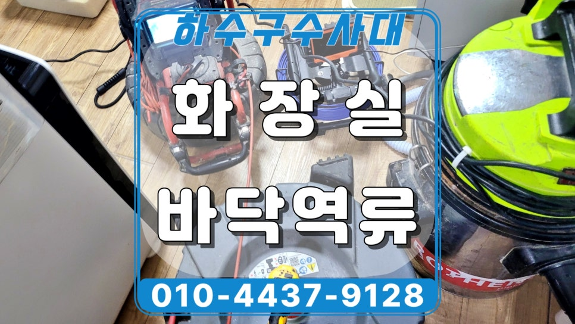
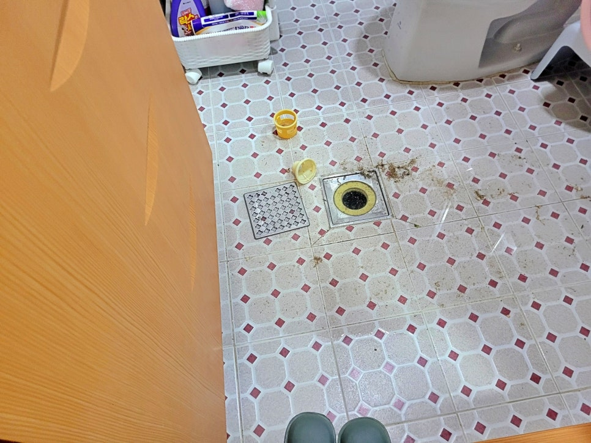
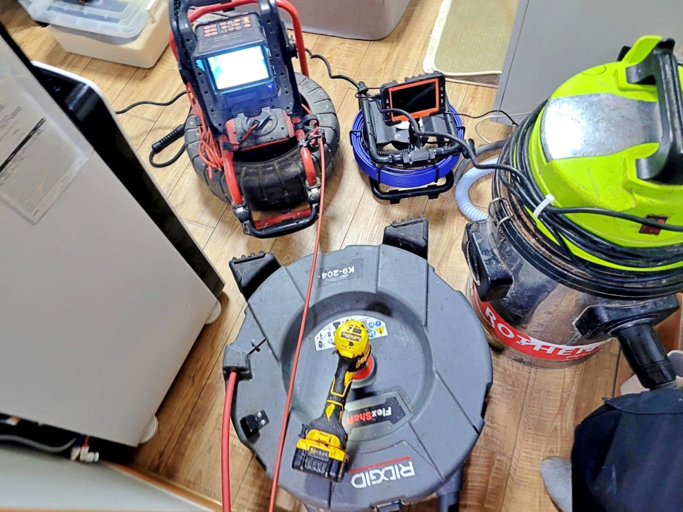
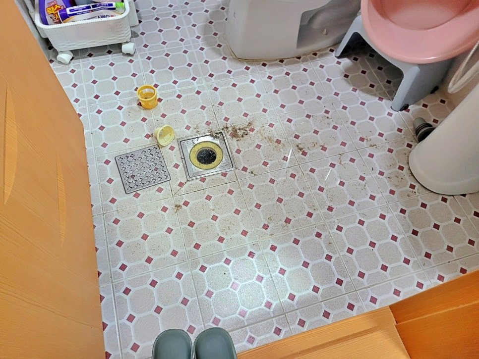
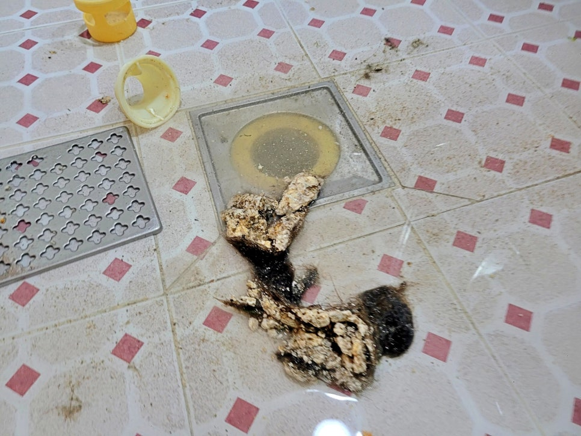
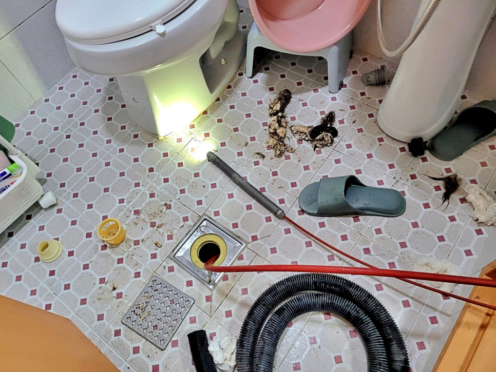
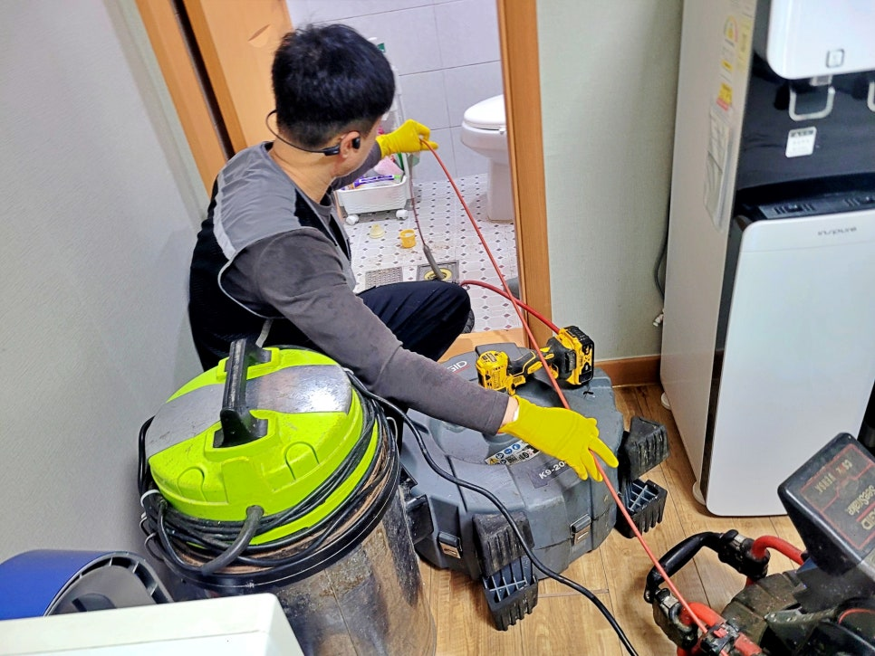

🏠 안산 고잔동 원룸 화장실 하수구역류, 기름막힘 샤프트 청소 현장
안산 싱크대막힘 전문 시공 후기

📋 작업 개요
- 위치: 안산
- 서비스 유형: 싱크대막힘, 하수구막힘, 배관막힘, 역류해결, 뚫는업체, 배관청소
- 작업 일시: 6시간 전
- 업체명: 하수구수사대 (010-5615-2118)
🔍 문제 상황
안산 고잔동 원룸 화장실 하수구역류,
기름막힘 샤프트 청소 현장
안산 고잔동 원룸 화장실 하수구역류 현장
안녕하세요.
안산 하수구역류 현장을 다녀온
하수구수사대입니다.
이번 현장은 안산 단원구 고잔동
원룸 화장실에서 발생한
바닥 하수구역류 사례입니다.
세면대에서 물을 사용하면 화장실 바닥
하수구 쪽으로 오수가 역류해 빠지지 않는
상태였는데요.
욕실 하수구에서 물이 내려가지 않는 상황
처음 보기에는 욕실 유가 주변만
막힌 것처럼 보일 수 있었지만,
현장 확인 결과 단순한 입구 막힘은
아니었습니다.
안산 고잔동 하수구막힘 현장 핵심 개요
1. 현장 위치: 안산 단원구 고잔동 원룸
2. 주요 증상: 세면대 사용 시 화장실 바닥 하수구역류
3. 확인 원인: 기름막힘과 머리카락 뭉침
4. 작업 내용: 석션, 이물질 제거, 내시경 확인, 샤프트 청소
5. 소요 시간: 약 1시간 30분
6. 작업 결과: 막힌 구간 관통 후 배관 내벽 청소 완료
세면대 물 사용 후 바닥 하수구로 역류
석션 장비와 내시경 장비를 준비한 모습
현장에 도착했을 때는
화장실 바닥에 오수가 올라와
제대로 빠지지 않는 상태였는데요.

🔎 원인 분석
💡 전문가 진단: 슬러지와 이물질이 통로를 꽉 막고 있어 배수가 불가능하며, 정밀 타격 및 배관 세척이 동반되어야 해결 가능합니다.
이런 경우 바로 장비를 넣기보다
먼저 바닥에 고인 오수부터
정리하는 게 순서입니다.
하수구 입구 주변 오염 상태를 확인하는 중
오수가 남아 있으면
유가 입구 상태도 정확히 보기 어렵고,
작업 중 오염이 더 번질 수 있습니다.
하수구 입구에 엉긴 이물질을 확인하는 모습
그래서 먼저 석션 장비를 이용해
바닥에 고인 오수를 제거했습니다.
그다음 하수구 입구를 확인해 보니
기름 찌꺼기와 머리카락이 한데 뭉쳐
입구 쪽을 막고 있었는데요.
겉에 보이는 이물질만 제거하면
잠깐은 물이 내려가는 것처럼
보일 수 있습니다.
하지만 이 현장은 세면대 물을 쓸 때마다
바닥 하수구로 역류하는 상태였기 때문에
배관 안쪽까지 확인해야 했습니다.
내시경 확인 후 샤프트 청소 진행
샤프트 장비로 하수관 청소를 진행함
하수구 입구 이물질을 제거한 뒤
내시경 장비로 배관 내부를 확인했는데요.
확인해 보니 문제 지점은
욕실 배관 안쪽, 싱크대 하수관과
만나는 구간이었습니다.
그 지점에 기름이 두껍게 붙어 있었고,
머리카락과 찌꺼기가 함께 엉켜
배수 흐름을 막고 있었고요.

🔧 작업 과정
고객님께 내시경 화면으로
현재 배관 상태를 직접 보여드린 뒤
샤프트 노즐을 삽관해 청소를 시작했습니다.
내시경 카메라로 배관 내부를 재점검 중
입구부터 배관 안쪽까지
내벽에 붙은 기름을 긁어내면서
막힌 구간을 조금씩 뚫어갔습니다.
이번 현장이 까다로웠던 이유는
기름과 머리카락이 따로 막힌 게 아니라
한 덩어리처럼 뭉쳐 있었다는 점입니다.
작업 중 노즐 헤드에 이물질이 엉겨 붙어
중간중간 빼내서 청소하고 다시 넣는
과정을 반복해야 했습니다.
이런 현장은 무리하게 밀어 넣기만 하면
안쪽에서 더 단단히 뭉칠 수 있고요.
그래서 배관 상태를 보면서
천천히 풀어내는 방식으로 진행했습니다.
노즐에 엉긴 이물질을 제거하며 작업을 이어감
싱크대 배관과 연결된 구조도 변수였는데요.
원룸이나 오래된 주거 공간에서는
욕실 하수구와 싱크대 하수관이
같은 라인으로 연결된 경우가 있습니다.
작업 중 제거한 기름 찌꺼기와 머리카락 뭉침
이 현장도 그런 구조였습니다.
세면대나 욕실만 사용하는데
왜 기름막힘이 생겼는지 의아할 수 있지만,
싱크대 하수관과 연결되어 있으면
주방에서 흘러간 기름 찌꺼기가
욕실 배관 쪽 문제로 나타날 수 있습니다.
그래서 단순히 욕실 유가만 청소해서는
재발 가능성이 남습니다.
막힌 지점을 정확히 보고,
연결된 배관 안쪽까지 청소해야
배수 흐름이 안정됩니다.
작업 후 물을 흘려 배수 상태를 확인
작업은 약 1시간 30분 정도 걸렸고요.
막힌 구간을 뚫은 뒤에는 배관 내벽에
남아 있던 기름 찌꺼기까지
샤프트 장비로 정리했습니다.
작업 후에는 물을 흘려보내
세면대를 사용할 때 바닥 하수구로
다시 역류하지 않는지 확인했습니다.
안산 고잔동 하수구막힘 시공 후기를 마치며
작업 후 바닥을 정리하고 유가 덮개를 닫은 모습
이번 안산 고잔동 원룸 현장은
겉으로는 화장실 하수구역류였지만,
실제 원인은 싱크대 배관과 연결된 구간의


✅ 작업 완료
기름막힘과 머리카락 뭉침 때문이었는데요.
어디서 물을 사용할 때 역류하는지,
배관이 어디와 연결되어 있는지,
안쪽에 어떤 이물질이 쌓였는지를
같이 확인해야 재발을 줄일 수 있습니다.
만약 화장실 바닥 하수구로 오수가
올라오거나 세면대 사용 후 물이 역류한다면
하수구수사대로 연락 주셔서 정확한
현장 점검을 통해 문제를 해결받으시기 바랍니다.
감사합니다.
하수구수사대였습니다.
#안산고잔동하수구역류 #안산하수구역류 #고잔동하수구막힘 #안산원룸하수구막힘 #안산화장실하수구역류 #고잔동욕실하수구막힘 #안산고잔동배관청소 #하수구수사대




⚠️ 주방 싱크대 배관 막힘 예방 수칙
- ✅ 기름기가 묻은 식기나 프라이팬은 설거지 전 키친타올로 반드시 기름때를 닦아내세요.
- ✅ 주기적으로 싱크대 개수대에 뜨거운 물을 가득 받아 한 번에 내려 배관 내부 기름을 씻어내세요.
- ✅ 배수구 거름망을 미세한 필터로 사용하시고 음식물 찌꺼기가 틈으로 새어 들지 않게 관리하세요.
- ✅ 베이킹소다와 식초를 뜨거운 물과 함께 일주일에 한 번씩 부어주면 배관 살균과 막힘 예방에 좋습니다.
💡 핵심 정리
- 확실한 장비 작업(내시경 점검 및 샤프트 스케일링)으로 원인을 뿌리 뽑습니다.
- 작업 후 1년 이내에 동일한 부위 재발 시 100% 무상 A/S 서비스를 보장합니다.
- 서울 · 경기 · 인천 전 지역에 24시간 언제든 긴급 출동할 수 있도록 항시 대기 중입니다.
❓ 자주 묻는 질문 (FAQ)
🚨 안산 싱크대막힘 문제로 고민이신가요?
정확한 원인 진단과 확실한 시공으로 재발 없는 해결을 약속드립니다.
24시간 긴급 출동 | 서울 · 경기 · 인천 전지역 | 1년 내 재발 시 무상 A/S